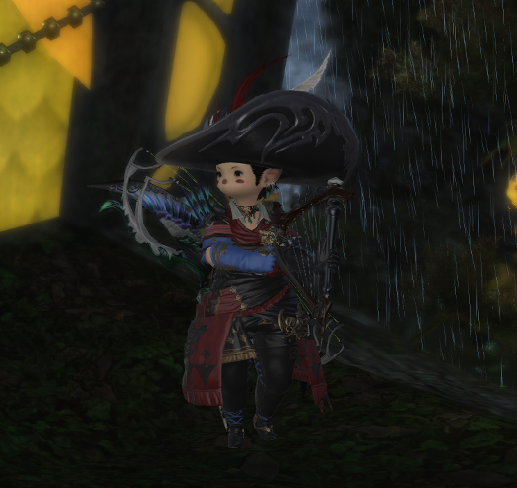

Bard Classes
Bard is a versatile ranged DPS class that excels in providing support to the party through various buffs and debuffs. The Bard's primary role is to deal damage while enhancing the performance of their allies with songs that increase critical hit rates, direct hit rates, and reduce damage taken. The Bard's gameplay revolves around maintaining damage over time effects (DoTs) on enemies, using their repertoire of songs to provide continuous buffs, and executing powerful burst damage abilities during specific windows of opportunity. The Bard's toolkit includes a variety of abilities that can be used to adapt to different combat situations, making them a valuable asset in both solo and group content. One of the Bard's key mechanics is the use of songs such as "Mage's Ballad," "Army's Paeon," and "The Wanderer's Minuet." Each song provides unique benefits and can be cycled through to maximize the party's overall performance. Additionally, the Bard has access to a range of utility abilities, including "Battle Voice," which further enhances the party's damage output, and "Troubadour," which provides defensive buffs. The Bard's mobility is another significant advantage, allowing them to maintain high damage output while avoiding enemy attacks. This makes them particularly effective in encounters that require constant movement. Overall, the Bard is a dynamic and engaging class that offers a blend of damage dealing and support capabilities, making them a popular choice among players who enjoy a multifaceted playstyle.
Leveling Guide for Bard
Levels 1-30
Start your journey as an Archer in Gridania. Focus on completing the main scenario quests (MSQ) and class quests. Equip the best gear available and participate in FATEs and dungeons to
Levels 30-50
Upon reaching level 30, complete the Bard job quest to unlock the job. Continue to follow the MSQ and class quests to progress through the story. Participate in dungeons, FATEs, and levequests to gain experience and level up your Bard. Equip gear with Dexterity and critical hit rate to optimize your damage output.
Levels 50-80
As you reach higher levels, focus on completing the Stormblood and Shadowbringers expansions to unlock new content and abilities. Participate in trials, raids, and other endgame activities to improve your skills and gear. Join a Free Company or party to tackle challenging content and earn rewards. Keep practicing your rotation and optimizing your gear to maximize your Bard's potential.
Level 80
Upon reaching level 80, you will have access to all of the Bard's abilities and gear. Continue to refine your skills and participate in endgame content to test your abilities. Join a static group or party to tackle Savage raids and other challenging content. Work on obtaining the best gear available to maximize your performance. Keep practicing and honing your skills to become a master Bard.